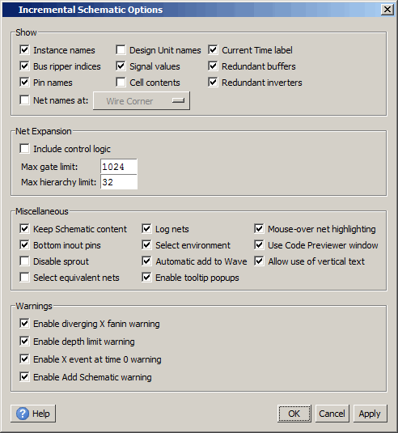

How do I Configure Schematic Window Options?
The menu
selection allows you to configure several options that determine
how the Incremental and Full views behave. Options are the same
for both views. Any changes made to the schematic display options
are saved for future simulation and debugging sessions.
Incremental view options are shown in Figure 1. For a description of what each option does, click the “Show Help Text Pane” button (the ‘i’ button) in the bottom left corner of the dialog, or refer to Incremental Schematic Options in the GUI Reference Manual.
Figure 1. Configuring Incremental View Options

You may also right-click in either the Incremental or Full view to select Show from the popup menu, which gives you the display selections shown in Figure 2.
Figure 2. Display Options in Right-Click Menu

Net Names and Signal Values can be toggled on and off with the N and V keys on your keyboard, respectively. (See How do I Use Keyboard Shortcuts?) By default, displayed signal values are for the current active time.